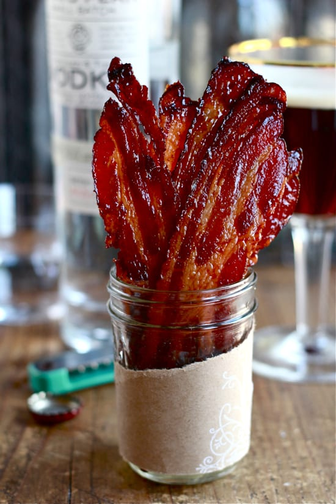

Maple Bacon

Maple and Brown Sugar Bacon
Serve these baked maple and brown sugar glazed bacon strips as part of a hearty breakfast with pancakes or French toast. Alternatively, cut the bacon strips into pieces before baking and use the glazed pieces on appetizers or in burger mixtures. The bacon would make an excellent topping for chicken or turkey burgers. Crumble the bacon and add it to a pan of cornbread or make a crispy, savory-sweet topping for muffins.
Ingredients
- 12 to 16 ounces thick-sliced bacon
- 4 tablespoons brown sugar
- 2 tablespoons maple syrup
Instructions
- Gather the ingredients. Preheat the oven to 350 F.
- Line a rimmed jelly roll pan, half sheet pan, or roasting pan with foil. The pan should be large enough to hold a large cake cooling rack. Place a large cooling rack in the pan and brush a little vegetable oil over the rack. Or spray the rack with vegetable oil cooking spray.
- Lay the bacon strips over the rack, overlapping slightly if necessary.
- Combine the brown sugar and maple syrup in a bowl or small saucepan. Heat just until warm (stovetop or microwave). Brush the warmed sugar mixture over the bacon strips.
- Bake the bacon in the preheated oven for about 30 to 35 minutes, or until nicely browned and slightly crisp.
Home